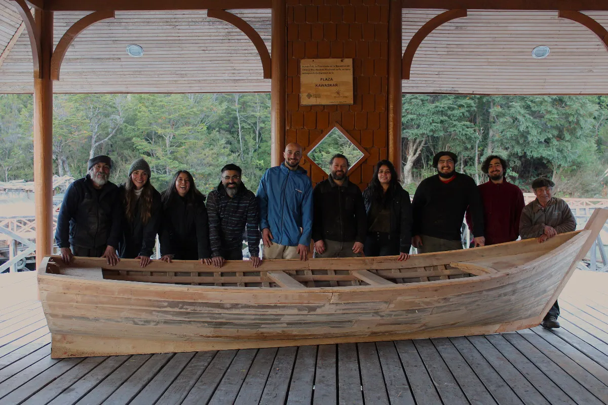
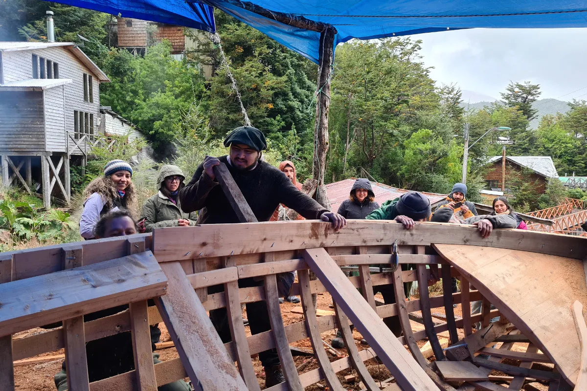
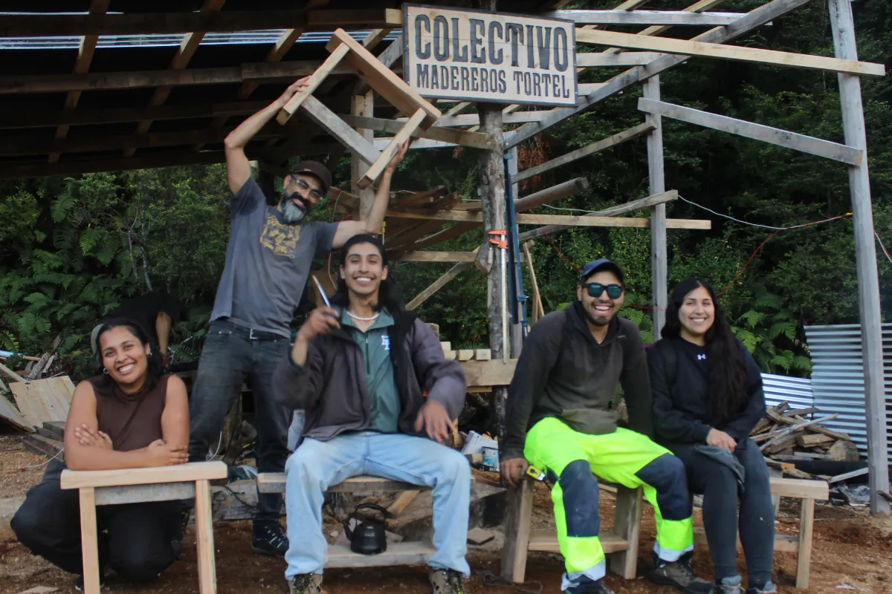
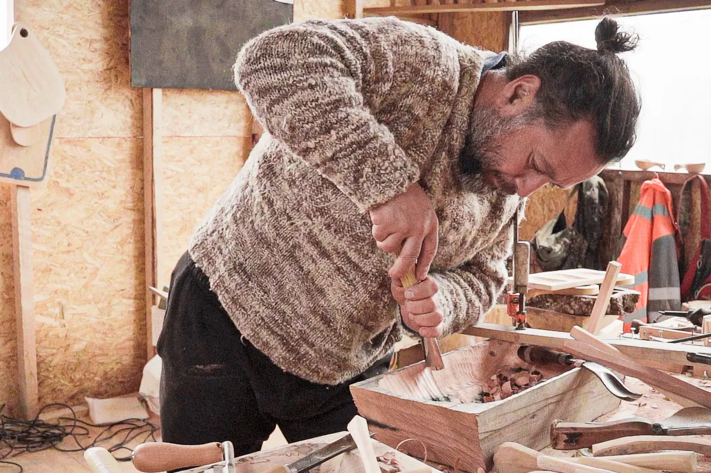
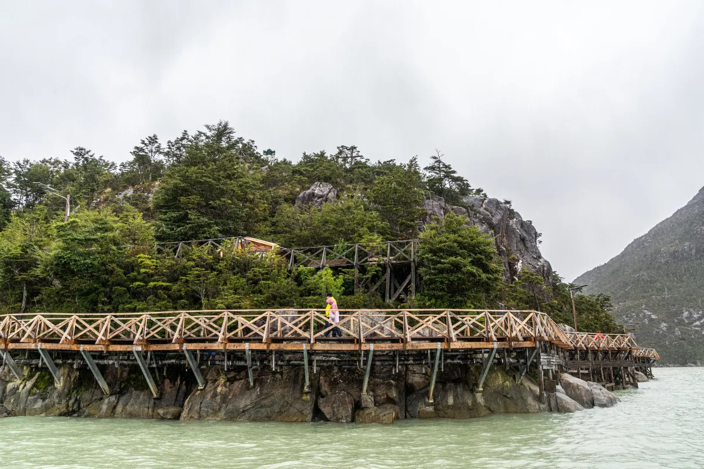
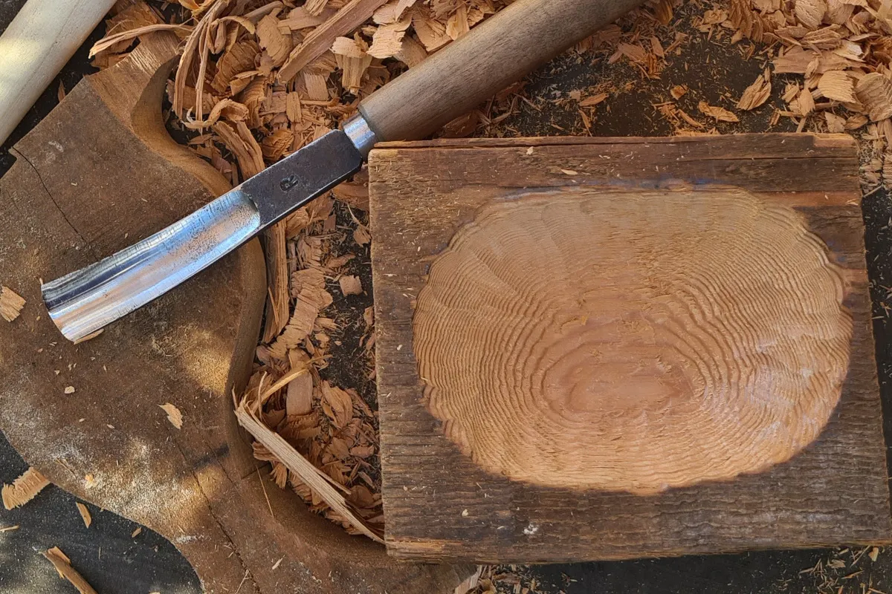

Proyectos


1- Plan de fortalecimiento Puntos de Cultura Comunitaria
Proyecto orientado a poner en valor dos oficios tradicionales de Tortel mediante procesos de aprendizaje y participación comunitaria. Se construyeron dos embarcaciones utilizando técnicas de carpintería de ribera y se realizaron talleres de tejuelería, junto con una investigación sobre la historia de la navegación y los oficios de la madera en la comuna.
Equipo
- Coordinadora y encargada de comunicaciones: María Francisca Ramírez I.
- Carpintería de ribera: Lázaro Igor Aguilante, Matías Poblete Poblete, Olegario Hernández Yefe y Juan Curinao.
- Tejuelería: Lázaro Igor Aguilante y Olegario Hernández Yefe.

2- Encuentro Patrimonial: teatro, danza y comunidad
Encuentro cultural que articuló teatro, danza, música, gastronomía y oficios en distintos espacios públicos de Tortel. A través de talleres, presentaciones e instancias de intercambio entre organizaciones culturales, el proyecto buscó fortalecer la convivencia comunitaria, ampliar el acceso a las artes y vincular las prácticas artísticas con el patrimonio natural y sociocultural de la comuna.
Equipo
- Taller de mueblería: Lázaro Igor Aguilante y Matías Poblete Poblete.
- Muestra gastronómica: María Francisca Ramírez.
- Danza: Atelakoya Tribal.

3- Raíces y sabores: artesanía en madera en Tortel
Proyecto que pone en relación la artesanía en madera con la cocina y la vida cotidiana de Tortel. A través de la creación de objetos de uso doméstico, talleres y encuentros con artesanos y cocineras locales, explora las posibilidades de la madera como material para crear, compartir saberes y fortalecer los vínculos entre oficio, alimentación, territorio y patrimonio cultural. Los resultados se presentaron en una exposición, un catálogo y un micro documental.
Equipo
- Artesanía: Lázaro Igor Aguilante.
- Investigación y dirección de arte: María Francisca Ramírez.
- Fotografía y dirección: Gabriel Asenie Urra.
- Diseño e impresión catálogo: Ailien Muñoz.

4- Navegando por la historia: rutas interpretativas en la bahía de Tortel
Proyecto de turismo cultural que desarrolla una ruta marítima y dos recorridos peatonales autoguiados para interpretar la Bahía de Tortel desde su patrimonio histórico, natural y cultural. Integra relatos, arquitectura, pasarelas, tejuelería, flora y fauna, promoviendo una experiencia turística responsable y fortaleciendo el vínculo entre visitantes, territorio y comunidad local.
Equipo
- Coordinación e investigación: María Francisca Ramírez.
- Turismo e investigación: Lázaro Igor Aguilante.
- Fotografía y registro audiovisual: Gabriel Asenie Urra.
- Diseño e impresión: Ailien Muñoz.

5- Imaginarios del hacer: temporalidades, paisajes y gestos en la artesanía del sur austral
Primer proyecto de investigación del Colectivo, centrado en comprender cómo el territorio, los materiales y las temporalidades del sur austral configuran las prácticas artesanales de la provincia de Capitán Prat. Desde una mirada situada, aborda los oficios como formas de conocimiento que articulan cuerpo, memoria, paisaje y modos de habitar.
Equipo
- Investigación y registro: María Francisca Ramírez.
- Artesanía en madera: Lázaro Igor Aguilante.
- Artesanía en junco: Ruth Barría Llancalahuen.
- Artesanía en lana:
- Artesanía en cuero: